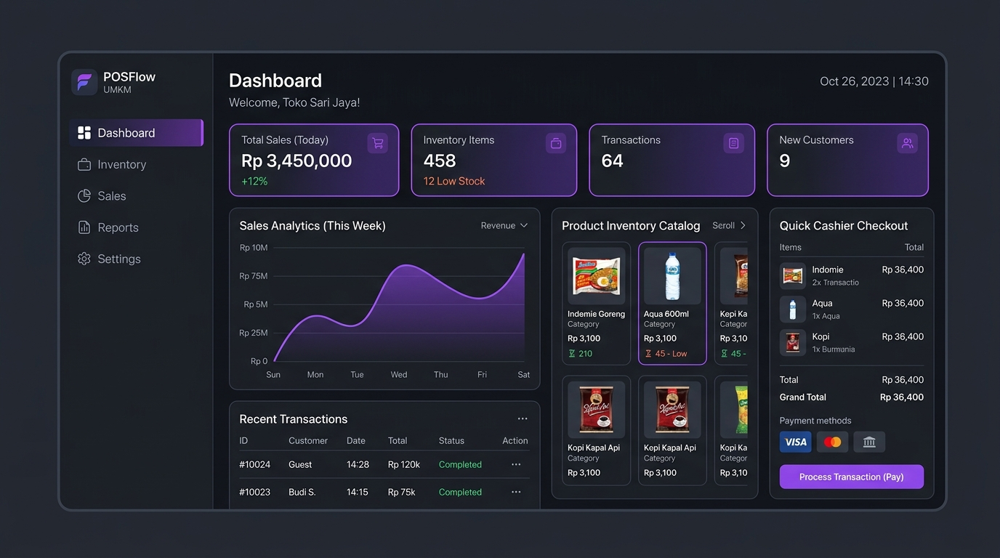

Sistem Kasir & Inventaris Toko UMKM (POSFlow)
Aplikasi kasir web modern yang dirancang khusus untuk toko retail UMKM guna menggantikan pencatatan manual. Menghadirkan kasir cepat (< 15 detik/transaksi), scanner barcode instan, cetak struk bluetooth, serta notifikasi otomatis bila stok barang menipis di bawah batas minimum.
Dampak Solusi: Mencegah potensi selisih stok fisik hingga 99% dan mempercepat rekap laporan laba-rugi harian dari 2 jam menjadi 1 klik otomatis.
React.js
Tailwind CSS
Supabase / REST
Chart.js Analytics
Web Audio Feedback